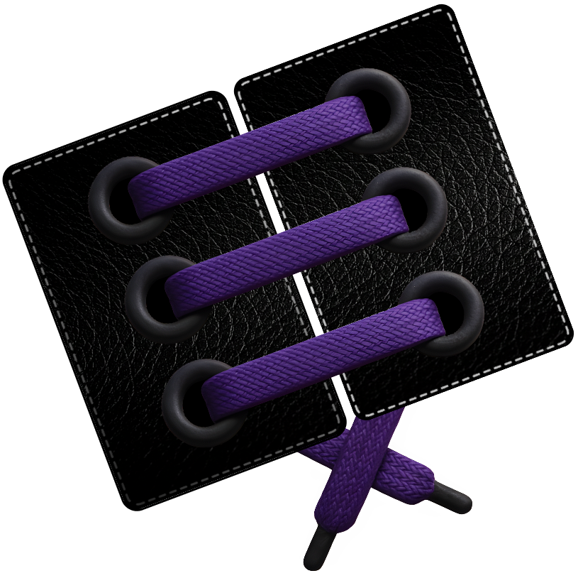

Lace your APIs faster than ever
A delightful, shoe-themed PHP microframework that can be spun up quickly for small API projects and offers a simple approach to using a framework.
A delightful, shoe-themed PHP microframework that can be spun up quickly for small API projects and offers a simple approach to using a framework.

An offline-first, API-first PHP micro-framework with a fresh approach to how we develop with framework. We built it for people with limited programming knowledge who do not care how the system works but just want to ship projects quickly, as well as for developers who enjoy exploring how things work. Whatever you are building, LacePHP helps you “lace” things together.
Like the perfect insole, LacePHP adapts to your workflow with intuitive APIs, clear conventions and a CLI command named lace. There is no hidden magic, just explicit, predictable behavior.
The framework is organized into layers: Sole handles core features like routing and middleware. Footbed stores runtime files. Laces contains your main application code. Insole allows adding plugins or helpers separately from core logic.
LacePHP works out of the box, even without internet or heavy dependencies. To share a local API simply run php lace dev:share (for example via ngrok). To use the PHP built-in web server use php lace tread.
Every part of the system, from HTTP routes to background jobs to AI scaffolding is accessible via a consistent command-line interface. If your shoe has an API, LacePHP makes it easy to define, document and test it.
Minimize overhead by avoiding large service containers or hidden global state. We keep things fast.
Documentation is woven in as a relatable, multi-chapter guide. Think of it as a fit test before you lace up: step by step, use case driven with real-world code samples.
All inputs are sanitized at the boundary including input values, headers and files. Built-in CSRF protection and optional encryption or signing helpers help keep your app on solid footing.
Inspired by social impact initiatives, LacePHP is designed for everyone with clean code, screen reader friendly output, simple licensing (MIT) and a community that values teaching over transaction.
Whether you add AI powered scaffolding, real time WebSocket support or advanced caching, LacePHP’s clear folder structure and plugin points let you upgrade or swap parts without replacing the whole shoe.

Join our ever-growing community of devs that use LacePHP